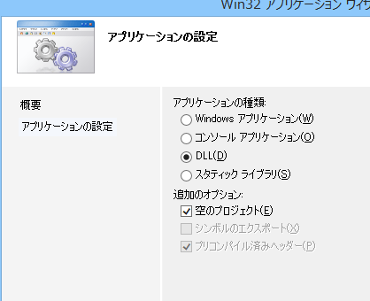
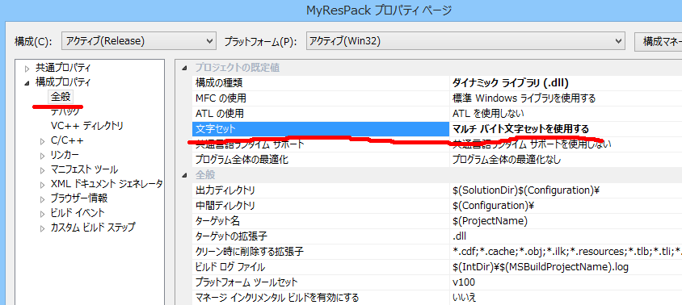
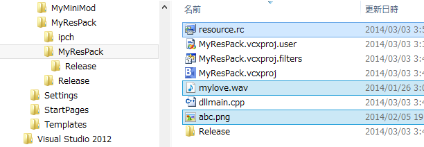

パック化の手順
-
さて、では、VC++のメニューより、｢新規作成｣=>｢プロジェクト｣を選択しましょう。
-
引き続いて、｢Win32｣=>｢Win32プロジェクト｣となります。
プロジェクト名に｢MyResPack｣などと入力し、OKしましょう。
名前はなんでも良いのですが、リソースのパックであることを感じとれる名前がよいでしょう。
-
｢次へ｣と続けて
-
｢DLL｣と「空のプロジェクト」にチェックを入れ、他はチェックをはずします。｢完了｣を押しましょう。

-
そうすると、ソリューションエキスプローラーは下図のようなツリーとなります。
-
「ソースファイル」のところを右クリックで「追加」->「新しい項目」と進み、
以下のように「dllmain.cpp」というソースをくっつけましょう。
-
以上で下図のように、｢dllmain.cpp｣だけくっついた状態となります。
-
この段階では、「dllmain.cpp」のソースの中身は空っぽです。
１行も何も書かれていない状態。
-
さて、少し話を変えて、
メニューのちょっと下あたりに｢Release｣もしくは｢Debug｣と見えている下図のようなところがあるはずです。
｢Release｣を一度選択しましょう。
-
シンプルなDLLにふさわしい設定にするために、プロジェクトの設定を変更する必要があります。
下図のようにソリューションエキスプローラの｢MyResPack｣を右クリックして、｢プロパティー」に入ります。
-
構成プロパティの｢全般｣もしくは「詳細」の項目に
｢文字セット｣という項目がありますので、｢Unicode文字セットを使用する｣というのを変えて、｢マルチバイト文字セットを使用する｣
にしましょう。
天翔記では、元々がShiftJIS(正確にはCP932)ですので、DLLをUnicode文字で管理するより、通常のマルチバイト文字セットの方が、はるかに扱いやすいためです。

-
同様に、構成プロパティの｢C/C++｣の項目(もしくはC/C++の「コード生成」の項目）に
｢ランタイムライブラリ｣という項目がありますので、｢マルチスレッド DLL(/MD)｣ではなく、｢マルチスレッド (/MT)｣へと変更します。
これは、このDLL内に必要なものを内包するか、それとも、できるだけ外部のDLLに頼りサイズを減らすかの選択です。
両者はファイルサイズがかなり異なりまずが、どのみちファイルサイズは小さいため、
特に問題がなければ、 トラブル防止のため、｢マルチスレッド (/MT)｣を選択しておきましょう。
-
｢適用｣=>｢OK｣を押して、全てを反映させましょう。
-
さて、それでは、dllmain.cpp を選択して、話を戻しましょう。
-
「呼び出されるだけで機能的には何もしないdll」というものを作成します。
あってるかどうか、コピペが可能なソース
#include <windows.h> BOOL APIENTRY DllMain( HMODULE hModule, DWORD ul_reason_for_call, LPVOID lpReserved ) { return TRUE; } -
さて、ソースは以上です。
-
それでは、いよいよリソースを埋め込みます。
「リソースファイル」のところで右クリックを選びます。
「resource.rc」というファイルをくっつけましょう。
拡張子が「.rc」であれば、名前は自由です。
-
それでは、リソースをテキストで編集します。
「resource.rc」のところで、右クリックして、コード表示。
以下のようにテキスト入力してみましょう。

-
青線が「シンボル名」、IMAGEやWAVEが「グループ名」、"abc.png"や"mylove.wav"がファイル名という理解をしておきましょう。
-
Windowsのエキスプローラー上で、「resource.rc」と同じフォルダに、"mylove.wav"と"abc.png"というファイルを適当に用意してコピーなどして入れましょう。

-
準備は全て終わりました。プロジェクトをビルドしましょう。
-
ちゃんとエラーも出ずにdllファイルは出来ましたか？
-
これでdllファイルそれ自体に、wav相当のバイナリデータや、png相当のバイナリデータが「埋め込まれた」形となります。
-
では、「このMyResPack.dll」を天翔記フォルダにコピーしましょう。